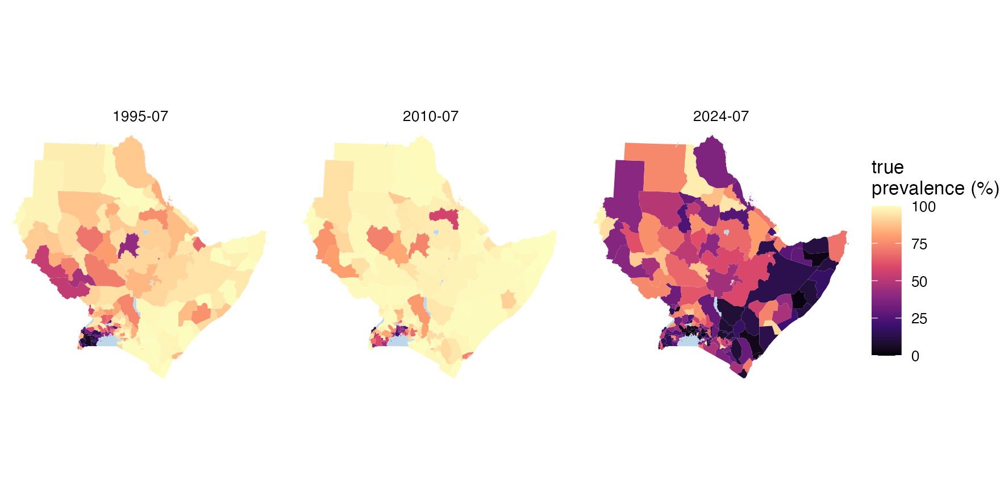
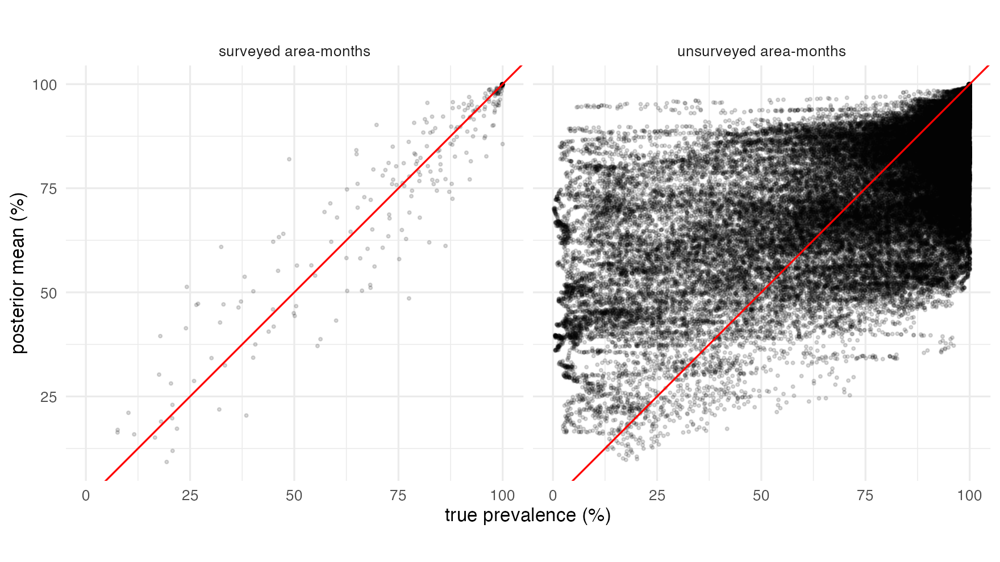
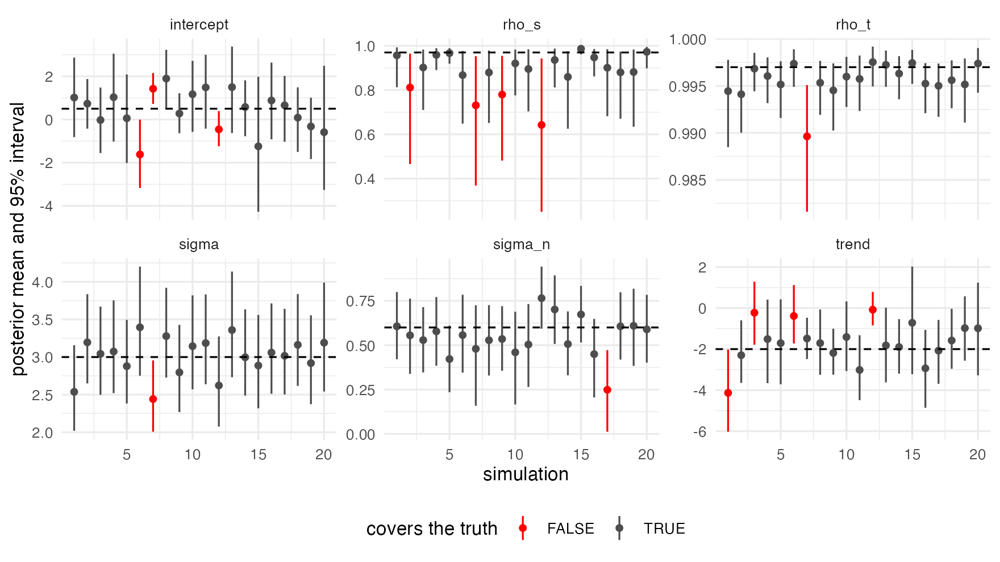

With real data, the truth is unknown, and a model can only be judged by how well it predicts (tutorial 4). With simulated data, the truth is known, so the fit can be checked against it directly. This is worth doing for your own design before trusting a map. Can these surveys, in these places and months, identify the parameters? How wide should the intervals be where there are no data?
This tutorial simulates data at the survey design of tutorial 1: the same area-months, with the same numbers tested. It fits the model, and compares the result with the truth, first for one simulation and then over twenty.
1. Simulating at a real design
simulate_areal() draws one surface from the model and
then binomial surveys. Given cells, it surveys those
area-time cells with their numbers tested. The $cells of
real data qualifies, so a simulation can copy a real design:
iso3 <- c("DJI", "ERI", "ETH", "KEN", "SOM", "SSD", "SDN", "UGA")
adm1 <- sf::st_as_sf(geodata::gadm(iso3, level = 1, path = tempdir(), version = "4.1", resolution = 2))
lakes <- rnaturalearth::ne_download(scale = 10, type = "lakes", category = "physical",
returnclass = "sf", destdir = tempdir())
crs <- "+proj=laea +lat_0=8 +lon_0=37 +units=m"
adm1 <- sf::st_make_valid(sf::st_transform(adm1, crs))
lakes <- sf::st_make_valid(sf::st_transform(lakes, crs))
lakes <- lakes[as.numeric(sf::st_area(lakes)) > 1e9, ]
water <- sf::st_intersection(sf::st_union(lakes), sf::st_union(adm1))
adm1 <- sf::st_difference(adm1, water)
adm1 <- adm1[adm1$ENGTYPE_1 != "Water body", ] # what is left of Uganda's lake units
fr <- areal_frame(adm1, id = "GID_1", groups = c(country = "COUNTRY"), link_within = "country",
verbose = FALSE)
tf <- time_frame(1989, 2024, "month")
d <- areal_data(igad_crt76t, fr, tf, y = "positive", k = "tested",
coords = c("longitude", "latitude"), date = "collection_day", verbose = FALSE)The parameters are of the same order as tutorial 1’s posterior: a strong field, smooth in space and time, and a declining trend.
sim <- simulate_areal(fr, tf, cells = d$cells, sigma = 3, rho_s = 0.97, rho_t = 0.997,
sigma_n = 0.6, beta = c(intercept = 0.5, trend = -2), seed = 101)
sim
#> <stareal_data> 264 of 264 surveys used, pooled into 264 cells (simulated)
#> 59 of 172 units and 74 of 432 time steps have data (0.36% of the 74,304 area-time cells)
#> tested per cell: median 54, range 1-1,310; total 23,844 tested, 18,443 positive
#> truth: sigma 3, rho_s 0.97, rho_t 0.997, sigma_n 0.6; intercept 0.5, trend -2The simulation is an ordinary data object, with the truth attached:
sim$truth$prevalence is the prevalence of every area in
every month.
truth_map <- function(month) {
m <- sf::st_sf(id = adm1$GID_1, geometry = sf::st_geometry(adm1))
m$prevalence <- sim$truth$prevalence[m$id, month]
m$time <- month
m
}
tm <- do.call(rbind, lapply(c("1995-07", "2010-07", "2024-07"), truth_map))
ggplot(tm) +
geom_sf(aes(fill = prevalence), colour = NA) +
geom_sf(data = sf::st_sf(water), fill = "#bcd6ea", colour = NA) +
facet_wrap(~time) +
scale_fill_viridis_c("true\nprevalence (%)", limits = c(0, 100), option = "magma") +
theme_void()
2. Fitting
The same call as for real data:
fit <- fit_areal(sim)
diagnose(fit)$checks
#> check value threshold direction pass
#> 1 theta R-hat (max) 1.009348 1.05 <= TRUE
#> 2 beta R-hat (max) 1.004808 1.05 <= TRUE
#> 3 latent R-hat (max) 1.009497 1.05 <= TRUE
#> 4 theta bulk ESS (min) 464.525262 400.00 >= TRUE
#> 5 beta bulk ESS (min) 987.478915 400.00 >= TRUE
#> 6 latent bulk ESS (median) 961.730566 100.00 >= TRUE3. The parameters against the truth
tab <- summary(fit)$table[, c("variable", "mean", "q2.5", "q97.5")]
tab$truth <- c(sim$truth$theta, sim$truth$beta)[tab$variable]
tab$covered <- tab$q2.5 <= tab$truth & tab$truth <= tab$q97.5
tab
#> variable mean q2.5 q97.5 truth covered
#> 1 sigma 3.3394988 2.78231628 4.0273402 3.000 TRUE
#> 2 rho_s 0.8310090 0.58645818 0.9601813 0.970 FALSE
#> 3 rho_t 0.9934100 0.98897372 0.9966330 0.997 FALSE
#> 4 sigma_n 0.3612094 0.04172819 0.6559755 0.600 TRUE
#> 5 intercept 2.1937699 0.97223072 3.3500857 0.500 FALSE
#> 6 trend -1.8379738 -3.29124629 -0.2948046 -2.000 TRUE3 of the 6 intervals cover their true values; the misses are rho_s, rho_t, intercept. One simulation is one draw, though. Whether misses like these are bad luck or a pattern is the job of the repeated study in section 5.
4. The surface against the truth
The parameters are a means to an end; the map is what gets used.
predict() gives every area-month, and each can be checked
against the true prevalence:
pr <- predict(fit)
pr$area$truth <- sim$truth$prevalence[cbind(pr$area$id, pr$area$time)]
pr$area$covered <- pr$area$q2.5 <= pr$area$truth & pr$area$truth <= pr$area$q97.5
pr$area$surveyed <- ifelse(pr$area$k > 0, "surveyed area-months", "unsurveyed area-months")
aggregate(cbind(covered, width = q97.5 - q2.5) ~ surveyed, pr$area, mean)
#> surveyed covered width
#> 1 surveyed area-months 0.9318182 22.81711
#> 2 unsurveyed area-months 0.9719881 73.58791
ggplot(pr$area, aes(truth, mean)) +
geom_point(alpha = 0.15, size = 0.6) +
geom_abline(colour = "red") +
facet_wrap(~surveyed) +
coord_equal() +
labs(x = "true prevalence (%)", y = "posterior mean (%)") +
theme_minimal()
Where there are surveys, the posterior mean follows the truth closely and the intervals are narrow. Where there are none, which is most area-months (only 59 of the 172 units have any data), the estimates shrink toward the regional mean. Many unsurveyed units are far from it, so the means scatter widely. But their intervals are about 3 times as wide, and still cover the truth about as often as they should.
The coverage of one simulation moves with its estimated parameters, which all its cells share. Section 5 averages over twenty simulations.
5. Over twenty simulations
One simulation is one draw: a parameter outside its interval might be
bad luck. The way to know is to repeat the exercise many times, with new
surfaces and surveys at the same design. That is twenty fits and twenty
predictions, too long for a tutorial, so it was run once with the code
above in a loop (data-raw/simulation_crt76t.R in the source
repository), keeping each parameter’s interval and the surface’s
coverage. The results ship with stareal:
study <- readRDS(system.file("extdata", "simulation_crt76t.rds", package = "stareal"))
params <- study$params
params$covered <- params$q2.5 <= params$truth & params$truth <= params$q97.5
aggregate(covered ~ variable, params, mean)
#> variable covered
#> 1 intercept 0.85
#> 2 rho_s 0.80
#> 3 rho_t 0.95
#> 4 sigma 0.95
#> 5 sigma_n 0.95
#> 6 trend 0.80
ggplot(params, aes(rep, mean, ymin = q2.5, ymax = q97.5, colour = covered)) +
geom_pointrange(size = 0.2) +
geom_hline(aes(yintercept = truth), linetype = 2) +
facet_wrap(~variable, scales = "free_y") +
scale_colour_manual(values = c(`TRUE` = "grey30", `FALSE` = "red")) +
labs(x = "simulation", y = "posterior mean and 95% interval", colour = "covers the truth") +
theme_minimal() + theme(legend.position = "bottom")
aggregate(cbind(covered, width) ~ observed, study$surface, mean)
#> observed covered width
#> 1 FALSE 0.9433428 75.98931
#> 2 TRUE 0.9380682 28.03930With twenty simulations, an honest 95% interval misses the truth about once, and two or three misses are not unusual. Over the twenty:
-
sigmaandsigma_ncover the truth 19 and 19 times. -
rho_scovers it 16 times andrho_t19 times. Their misses all fall on the same side: the truth is just above the interval (4 of 4 forrho_s, 1 of 1 forrho_t). Both truths are close to 1. How close a correlation is to 1 is decided by a few broad patterns, which these data see only dimly, so the posterior leans toward the prior’s mass further from 1. - The
interceptand thetrendcover the truth 17 and 16 times, with misses on both sides. The regional level and slope trade off against the field’s own region-wide component, whose variance is proportional tosigma^2 / (1 - rho_s). Whenrho_sis estimated too low, that variance is understated, and the fit is too sure of the regional level and slope. - The surface, which is what the maps are made of, covers the truth in about 94% of area-months, surveyed or not (the table above).
-
diagnose()passed 19 of the 20 fits at the default length. Check every fit: a fit that fails needs a longer run.
Is something wrong? Not with the software. A Bayesian 95% interval is
calibrated on average over the prior, not at every fixed truth, and a
truth near the edge of what the data can resolve is where it can
under-cover. Simulation-based calibration (Talts et al. 2018) checks
the software itself. It draws the parameters from the prior, simulates,
fits, and checks that the truth’s rank among the posterior draws is
uniform. For stareal, 200 such simulations on a small lattice
gave uniform ranks for every parameter
(data-raw/check_sbc.R in the source repository).
The lesson for this design: the surface’s intervals can be taken at face value. The correlations, and the regional intercept read as a result in its own right, are less certain than their intervals say when the correlations are close to 1. A simulation at your own design, like this one, shows whether that applies to you.
6. What this does and does not show
A simulation from the model itself checks the software and the design: that the sampler finds the posterior, and that these surveys can identify the parameters. It cannot show that the model suits real data. The simulated field is exactly the model’s field, with the same smoothness everywhere, no outliers and no study effects.
Two extensions make the check harder and more useful:
- Simulate from something else and fit the model to it: a localised emergence like that of tutorial 2, a covariate the fit leaves out, or overdispersed surveys. The question then is whether the intervals stay honest when the model is wrong.
-
Simulate a design you are planning: add the surveys
you might collect to
cells, and see how much the intervals in the unsurveyed areas shrink.
What next
- Method: what the model is and how it is fitted.
-
Reference: the
options of
simulate_areal(), including covariates.